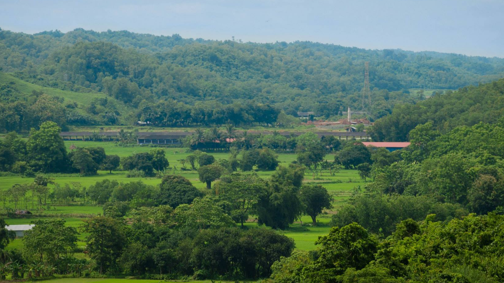
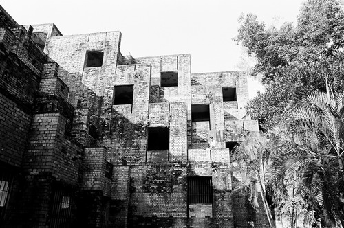
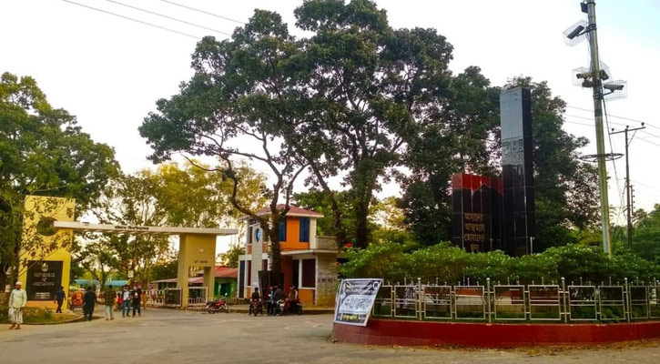

The University of Chittagong (Bengali: চট্টগ্রাম বিশ্ববিদ্যালয়) is a public research university with multidisciplinary faculties situated across a 2110-acre hilly landmass in Fatehpur Union of Hathazari Upazila, 22 kilometres north of Chittagong city of Bangladesh. This university has the largest campus among Bangladeshi universities. The academic activities of the university formally began on 18 November 1966. It has about 24,000 students and more than 1000 faculty members.
  University of Chittagong is located in Fatehpur Union, Hathazari Upazila about 22 kilometres north of the Chittagong city around 1754 acres of hilly and flat land.
The Chittagong University is situated on 1,754 acres of beautiful hilly land in mauja Fatehpur under hathazari upazila, 22 km north of chittagong city. It was opened on 18 November 1966. Back in 1962, Mr. Mohammad Ferdaus Khan, Deputy Director of Public Instruction of East Pakistan, prepared a preliminary draft plan of Chittagong University. Prior to that the Chittagong University Movement Council was formed in 1961 with Badshah Mia Chowdhury, a distinguished social welfare worker of Chittagong, as president and professor Ahmad Hossain of Chittagong City College as convenor. Dr. muhammad shahidullah (1885-1969), Dr. muhammad enamul haq (1906-82) and some other intellectuals, educationists, political personalities, and social workers played leading roles in the site selection movement of 1962
The day begins with the chirping of birds, many of which are unique to this region. Exotic animals, such as Hilly ‘Maya’ deer, porcupine, squirrel, python, water monitor and different reptiles and snakes roam around the hilly jungle under broad daylight. When the darkness of night falls, wild foxes start howling, while nocturnal wild boars and pole-cats come out from their den to hunt. This is not a description of a safari park in Bangladesh. This is just a glance of the magnificent biodiversity that can be found in the University of Chittagong campus. The university has the second largest campus in the country, with over 1,700 acres of hilly and plain lands. The rows of trees alongside the hilly roads present a beautiful spectacle for the eyes, and the hilly streams soothe the tired visitors. There something for every everyone here, be it rows of hilly areas or the sunrise and sunset from the mountain peak. The ever-prevalent biodiversity and the scenic natural beauty attracts nature lovers and tourists seeking a taste of the remarkable campus tourism.
Welcome to the University of Chittagong (CU), the most beautiful university in Bangladesh. Since its establishment in 1966, the University of Chittagong has grown to become one of the flagship research-led universities which is known for the excellence of its teaching, research, and services to local, national and international communities.
CU is continuously growing in its quality teaching and in-depth research along with its tangible infra-structural developments with commendable architectural designs. As one of the largest and oldest universities in Bangladesh, it comprises ten faculties including the Faculty of Arts and Humanities, Faculty of Science, Faculty of Business Administration, Faculty of Social Sciences, Faculty of Law, Faculty of Biological Sciences, Faculty of Engineering, Faculty of Education, Faculty of Marine Sciences and Fisheries and Faculty of Medicine.
CU is different it its campus-design, curricular & extra-curricular activities, ecological settings and natural surroundings with its defining characteristics. At present, CU has more than 27,000 students, 54 departments/institutes, and about 900 well-qualified teaching staffs. CU is one of the leading universities in Bangladesh in terms of quality research conducted by the faculties and post-graduate students. It has increasing number of quality publications published by faculties and post-graduate students in the internationally acclaimed research journals. The students of CU regularly win the top positions at the national level in debate, sports, computer programming, engineering designs and competition for business ideas. It is also the proud home to fine student-athletes, where performers win medals at national and international multi-sport events. For those reasons and many more, students identify CU by choice in ever-increasing numbers for building their personal, professional and academic careers.
I do welcome all to take a virtual tour to explore the beauty and strength of CU in its academic and natural settings.
More than 400 acres of land have already been brought under tree plantation programme. These plantations are mainly used for research and to put a vegetation cover on the campus. More than 200 tree species of both indigenous and exotic nature have already been planted in the campus. There is also a plan to conserve the threatened and endangered species in the campus through these plantation programmes. The Institute of Forestry & Environmental Sciences and the Department of Botany are mainly taking care of the plantation programmes on the campus. Various private organizations are often permitted to take part in tree plantation.
The campus is also very rich with diverse species of animals and birds. At least 130 species of birds have been found. A list of wildlife and insects is under preparation. With the afforestation programme, the diversity of animal life has also been increasing gradually. People residing in the campus can enjoy the melodious sounds of different types of birds and animals at different times. The university authority adheres to the policy of preserving as well as extending the facilities for wildlife in the campus.
An ideal botanical garden has been established on the southern side of the university campus over an area of 60 acres of undulated land for the conservation of both indigenous and exotic plant species of academic and aesthetic interests. More than 10,000 plants of about 400 species comprising over 150 families of both exotic and indigenous species of timber, medicinal, fruits, spices, beverage, latex, orchids, novelty etc. have been preserved or are growing naturally and used as experimental materials. About 72 species of orchids and a good number of rare shade plants have been conserved in the Orchidarium and Conservatory House respectively. At present, new management policy has been formulated to give it a sustainable shape both for academic and aesthetic aspects. The Department of Botany has also been associated with roadside plantation of the university.